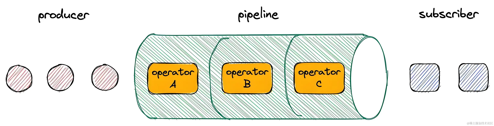

RxJS 是一个库，它通过使用 observable 序列来编写异步和基于事件的程序。它提供了一个核心类型 Observable，附属类型 (Observer、 Schedulers、 Subjects) 和受 [Array#extras] 启发的操作符 (map、filter、reduce、every, 等等)，这些数组操作符可以把异步事件作为集合来处理。
1. Rxjs 的概念介绍
Observable
Observable 是 RxJS 的核心。一个 Observable 代表一个可调用的未来值或事件的集合。创建 Observable 后，它并不会立即执行，而是等待被订阅。只有当 Observable 被一个 Observer 订阅后，它才开始发射数据。
Observer
Observer 是一个对象，包含了一些回调函数，这些函数定义了如何处理 Observable 发出的数据。Observer 的三个主要回调函数分别是：next、error和complete。
const observer = {
next: (x) => console.log("Observer got a next value: " + x),
error: (err) => console.error("Observer got an error: " + err),
complete: () => console.log("Observer got a complete notification"),
};
Subscription
Subscription 是表示可清理资源的对象，通常是 Observable 的执行。当你订阅一个 Observable 时，你会得到一个 Subscription 对象。你可以调用它的unsubscribe()方法取消订阅，停止 Observable 发射数据。
Operators
Operators 是方法，允许你以声明式的方式处理集合。操作符可以被链式调用，每一个操作符都会接收一个 Observable，并返回一个新的 Observable，这允许操作符被组合使用。
Subject
Subject 是一种特殊类型的 Observable，它允许将值多播到多个 Observer。普通的 Observable 是单播的（每个订阅的 Observer 拥有 Observable 独立的执行）。
基本使用
安装
首先，你需要安装 RxJS 库：
npm install rxjs
# yarn add rxjs
简单使用
假设有一个输入框，你希望根据用户的输入实时获取搜索结果。你可以创建一个 Observable 来监听输入框的input事件。
import { fromEvent } from "rxjs";
import { map, debounceTime } from "rxjs/operators";
export default {
mounted() {
const input = document.querySelector("#searchInput");
const input$ = fromEvent(input, "input").pipe(
debounceTime(300),
map((event) => event.target.value)
// 这里可以继续加入更多的操作符处理数据
);
input$.subscribe((value) => {
console.log(`Searching for ${value}`);
// 可以在这里调用API，根据value来获取数据
});
},
};
如何创建一个 Observable
1. 使用new Observable()构造函数
import { Observable } from "rxjs";
const observable = new Observable((subscriber) => {
subscriber.next("Hello");
subscriber.complete();
});
observable.subscribe(observer);
2. 使用创建操作符of
of可以将一些列的值转换成 Observable。
import { of } from "rxjs";
const observable = of(1, 2, 3);
observable.subscribe(observer);
3. 使用创建操作符from
from可以将类数组、可迭代对象、Promise 等转换成 Observable。
import { from } from 'rxjs';
const array = [1, 2, 3];
const observable = from(array);
// 将Promise转化为Observable
const promise = Promise.resolve(true);
const observable$ = from(promise);
observable$.subscribe(res => {
console.log(res); // true
)
// 也可以将Observable转化为Promise
const array2 = [1, 2, 3];
const observable2$ = from(array);
const promiseInstance = observable2$.toPromise();
promiseInstance.then(res => {
console.log(res)
}
4. 使用fromEvent创建 Observable
fromEvent可以将 DOM 事件转换成 Observable。
import { fromEvent } from "rxjs";
const button = document.querySelector("button");
const observable = fromEvent(button, "click");
操作符
什么是操作符？
操作符是 Observable 类型上的方法，比如 .map(...)、.filter(...)、.merge(...)，等等。当操作符被调用时，它们不会改变已经存在的 Observable 实例。相反，它们返回一个新的 Observable ，它的 subscription 逻辑基于第一个 Observable 。
操作符是函数，它基于当前的 Observable 创建一个新的 Observable。这是一个无副作用的操作：前面的 Observable 保持不变。 好比是内置的工具函数，有点类似于 lodash。
操作符本质上是一个纯函数 (pure function)，它接收一个 Observable 作为输入，并生成一个新的 Observable 作为输出。订阅输出 Observable 同样会订阅输入 Observable 。在下面的示例中，我们创建一个自定义操作符函数，它将从输入 Observable 接收的每个值都乘以 10：
function multiplyByTen(input) {
var output = Observable.create(function subscribe(observer) {
input.subscribe({
next: (v) => observer.next(10 * v),
error: (err) => observer.error(err),
complete: () => observer.complete(),
});
});
return output;
}
var input = Observable.from([1, 2, 3, 4]);
var output = multiplyByTen(input);
output.subscribe((x) => console.log(x));
输出
//10
//20
//30
//40
操作符的基本使用
- 使用
map操作符将每个值加倍
import { from } from "rxjs";
import { map } from "rxjs/operators";
const numbers = from([1, 2, 3, 4, 5]);
const doubled = numbers.pipe(map((value) => value * 2));
doubled.subscribe((x) => console.log(x));
// 输出: 2, 4, 6, 8, 10
- 使用 filter 操作符过滤偶数值
import { from } from "rxjs";
import { filter } from "rxjs/operators";
const numbers = from([1, 2, 3, 4, 5]);
const evens = numbers.pipe(filter((value) => value % 2 === 0));
evens.subscribe((x) => console.log(x));
// 输出: 2, 4
操作符的分类
操作符按照分类有几十上百种，不过我们不用全部理解，学习常用的就够用了。 操作符有着不同的用途，它们可作如下分类：创建、转换、过滤、组合、错误处理、工具，等等。在下面的列表中，你可以按分类组织好的所有操作符。
创建操作符
ajaxbindCallbackbindNodeCallbackcreatedeferemptyfromfromEventfromEventPatternfromPromisegenerateintervalneverofrepeatrepeatWhenrangethrowtimer
转换操作符
bufferbufferCountbufferTimebufferTogglebufferWhenconcatMapconcatMapToexhaustMapexpandgroupBymapmapTomergeMapmergeMapTomergeScanpairwisepartitionpluckscanswitchMapswitchMapTowindowwindowCountwindowTimewindowTogglewindowWhen
过滤操作符
debouncedebounceTimedistinctdistinctKeydistinctUntilChangeddistinctUntilKeyChangedelementAtfilterfirstignoreElementsauditauditTimelastsamplesampleTimesingleskipskipLastskipUntilskipWhiletaketakeLasttakeUntiltakeWhilethrottlethrottleTime
组合操作符
combineAllcombineLatestconcatconcatAllexhaustforkJoinmergemergeAllracestartWithswitchwithLatestFromzipzipAll
多播操作符
错误处理操作符
工具操作符
dodelaydelayWhendematerializefinallyletmaterializeobserveOnsubscribeOntimeIntervaltimestamptimeouttimeoutWithtoArraytoPromise
条件和布尔操作符
数学和聚合操作符
使用 Rxjs 解决开发中常见的场景
- 输入框的防抖
防抖是指在一段连续时间内，只执行一次事件。常用于输入框搜索，避免频繁发送请求。
import { fromEvent } from "rxjs";
import { debounceTime, map } from "rxjs/operators";
const input = document.querySelector("#searchInput");
const input$ = fromEvent(input, "input").pipe(
debounceTime(300),
map((event) => event.target.value)
);
input$.subscribe((value) => {
console.log(`Searching for ${value}`);
// 发送搜索请求
});
- 按钮的节流
import { fromEvent } from "rxjs";
import { throttleTime, map } from "rxjs/operators";
const button = document.querySelector("#myButton");
const buttonClicks = fromEvent(button, "click").pipe(throttleTime(1000));
buttonClicks.subscribe(() => console.log("Button clicked with throttle!"));
- 接口请求失败重试
在与 API 交互时，网络或服务问题可能导致请求失败。使用 retry 操作符可以自动重试请求。
import { ajax } from "rxjs/ajax";
import { retry, catchError } from "rxjs/operators";
const apiData = ajax("/api/data").pipe(
retry(3), // 重试3次
catchError((error) => of(error))
);
apiData.subscribe((data) => console.log("Data: ", data));
- 操作符组合
考虑以下场景：通过接口获取到应用列表，过滤掉未发布的应用，然后根据每一条数据的 key，从后端获取到 clientId。
// 请求参数
const params = {
filterText: '',
modelType: 'APP',
appModelId: ''
}
// 分页
const pageLink = new PageLink(10, 0);
// 接口请求
this.backendHttpService.queryAppDesignModels(pageLink, params)
.pipe( // 管道
// map 过滤掉未发布的应用，也可以直接用filter操作符
map(appinfos => {
appinfos.data = appinfos.data.filter(item => item.state !== 'UNDEPLOY');
return appinfos;
}),
// switchMap 将源 Observable 的每个值映射到一个新的 Observable
switchMap(apps => from(apps.data)),
// concatMap `concatMap` 会按照源 Observable 发出值的顺序订阅和发出这些映射的 Observable
concatMap((arr: { key: string }) => this.ucService.getClientUUID(arr.key)),
// 拿到后端返回数据
map((appinfos) => appinfos.clientId),
// 将请求接口获得的数据转化为数组
toArray(),
// tap 无副作用的操作符，可以用来做其他的事情、调试等
tap(res =>{
this.clientIdArr = res;
console.log(res); // clientId数组
},
// 过滤掉假值
map((appinfos) => appinfos.filter(Boolean)),
)
.subscribe({
next: (appList) => {
console.log(appList)
}
})
通过这些示例，我们可以看到 Rxjs 在处理异步和事件驱动编程时的强大能力。它提供了一种更加声明式和可组合的方式来处理复杂的异步逻辑，使得我们的代码更加清晰和可维护。由第五条示例可以看出，操作非常强大，灵活组合可以实现非常复杂的场景，这是 Promise 所不能比拟的，老铁们赶紧用起来。
Rxjs 的中文文档：cn.rx.js.org/manual/over…